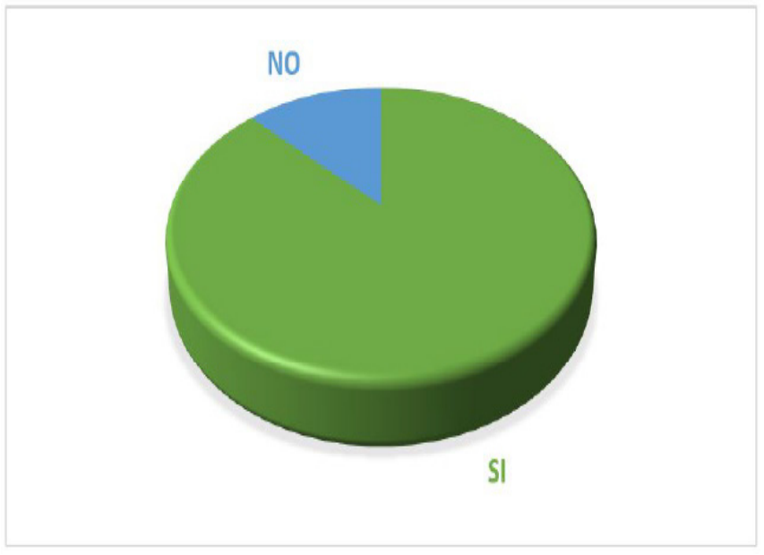
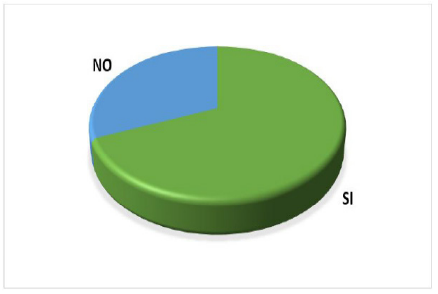

Introducción
Desde hace muchos años cuando los españoles
llegaron a colonizar Suramérica en el siglo
XVI, las regiones se dividían los espacios los
cuales se les conocía como Plaza Mayor, y
eran ocupadas por los indígenas, agricultores,
campesinos y artesanos, donde exhibían
sus frutas, verduras, carnes y/o productos
para la venta; de esta manera los visitantes
degustaban sus productos. Al pasar del tiempo,
dicho establecimiento fue evolucionando a lo
que hoy en día se conoce como La Plaza de
Mercado, el sitio perfecto donde se manifiesta
la unión de lo rural y lo urbano de acuerdo
con López (2009). Las plazas de mercado a
nivel mundial son de gran importancia pues
en estos lugares se logra conocer la cultura
de cada país y descifrar sus más auténticas
costumbres.
Asimismo, las plazas de mercado en Colombia
son el sitio perfecto para la comercialización
de productos agrícolas y artesanales, entre
frutas, verduras, tubérculos y gran variedad
de productos lácteos y cárnicos se refugia
la autenticidad, los rasgos culturales y las
tradiciones del país de acuerdo con Barreto,
et al., (2017). A pesar de esto, las plazas de
mercado en Colombia se han visto afectadas
por los almacenes de cadena, ya que muchas
personas los eligen por su proximidad o
facilidad según Mora et al., (2019), de la
misma forma, desde que Colombia le dio
entrada a los Tratados de Libre Comercio (TLC),
aumentando las importaciones y dañando los
mercados locales como lo mencionan Rivera
et al., (2019).
La constitución de las plazas de mercado fue
un modelo creado para el abastecimiento,
hasta la llegada de los centros comerciales y el
debilitamiento administrativo, esto es debido
al crecimiento de la ciudad y su descontrolada
expansión. Por tanto, dichas plazas de
mercado fueron decayendo con el pasar de
los años debido al descuido por parte de la administración. La idea de un nuevo modelo
de abastecimiento más llamativo para la
población, condujo a los comerciantes de la
región explorara en una mezcla de plaza de
mercado con un pequeño centro comercial
con el propósito de atraer nuevos clientes.
De acuerdo con Velásquez et al, (2020), las
oportunidades para el fortalecimiento de los
negocios está en la innovación, pero esto
se debe explorar de forma cuidadosa ya
que podría provocar que se desdibuje en su
totalidad la esencia del modelo de negocio.
Así mismo Baquero (2011). Define la plaza
de mercado como un lugar para el encuentro
social y con gran valor histórico, donde se
reúne la población, que como lo afirma Martín
(1981) en estos lugares se puede recopilar la
memoria, histórica, popular y cultural de las
regiones.
Por esta razón en algunas ciudades de
Colombia como es el caso de Bucaramanga y
la plaza de mercado de Guarín, implementan
estrategias que permitan posicionarlos como
un aspecto de potencial turístico en la zona,
así lo afirma Álvarez & Santamaría (2019).
Siendo estas plazas de mercado un potencial
de crecimiento cultural social y económico,
que complementan los atractivos turísticos
además de impulsar el fortalecimiento del
comercio agrícola. Según Arevalo & Gallego
(2019) reconocen que dentro de los atractivos
que se presentan en las plazas de mercado
se encuentran las muestras gastronómicas de
la región, razón por la que muchos visitantes
asisten a estos lugares para deleitarse con los
platos típicos representativos de la zona.
Como también es el caso en la Provincia de
Ocaña donde el comercio y la agricultura son la
principal fuente de la economía, sin embargo, el
campesinado de la región, así como el de todo
el país se ha visto grandemente afectado, pues
hace algunos años los campesinos producían
el 90% de lo que consumían los colombianos,
mientras que hoy en día compiten diariamente con los mercados internacionales que llegan
al país de acuerdo con Páez et al., (2017). Por
otra parte Arevalo & Ascanio (2005) indican
que en el municipio de Abrego la economía
gira en torno a la actividad agropecuaria con
productos como la cebolla cabezona (imagen
1) que tiene un vínculo tradicional y cultural en
la región.
El municipio de Abrego los productores
mantienen una lucha constante por conservar
la identidad del símbolo agrícola de la región
que la cebolla roja, a pesar de la entrada de
productos similares que entran de mercados
internacionales a precios más bajos; el olvido
por parte del gobierno nacional y la falta de
apoyo al campesinado, ha provocado que en
los últimos años se presente una inestabilidad
en la comercialización de los productos de la
región, además de todo lo generado por el
conflicto armado que se vive en esta parte
del país. De acuerdo con Hoyos et al,. (2020)
Indican que los agricultores se ven afectados
en los costos de producción cuando deben
incurrir en gastos adicionales, por tal razón
los agricultores del municipio de Abrego
incrementan los costos de los productos al
tener que transportarlos a otros mercados,
además también están en desventaja ya que mayormente se ven forzados a soportar de
igual forma el costo que ofrece el comerciante.
Por lo tanto, con la realización de la presente
investigación se pretende mostrar el impacto
desde el punto de vista económico ya sea
negativo o positivo, que genera la falta de una
plaza de mercado en el municipio de Abrego,
ayudando así a futuras investigaciones o
proyectos; de la misma forma, se busca con
esta información, que los entes responsables
del municipio, puedan impulsar a una posible
construcción de un mercado en Ábrego.
Metodología (Materiales y métodos)
La presente investigación se orientará
mediante un muestreo no probabilístico por
conveniencia, según Suarez (2018) un muestreo
no probabilístico se lleva a cabo cuando no
se tiene acceso a una lista completa de los
individuos que forman la población”; esto es
debido a que en el municipio de Abrego no se
cuenta con un censo completo de la totalidad
de los productores de las veredas, por lo tanto,
se desconoce la totalidad de agricultores del
municipio, según información aportada por la
oficina del plan de desarrollo territorial de la
Alcaldía municipal. Asimismo, se llevará a cabo
bajo el enfoque cuantitativo “basado en medir
y reseñar las características o rasgos de los
fenómenos objeto de estudio” de acuerdo con
(Bernal, 2010), realizando una encuesta cerrada
tabulada en Excel. Además de esto se realizará
una entrevista a un exalcalde del municipio de
Abrego, amparados en el método cualitativo,
que de acuerdo con Hoyos et al., (2019)
“se orienta a profundizar casos específicos,
cualificar y describir el objeto analizado”, Así
mismo de acuerdo con Patiño & Gómez (2016)
la entrevista a un informante clave permite al
investigador describir de forma cualitativa un
fenómeno estudiado.
Por otra parte (Fernández & Baptista,
2010) afirman que “la investigación de tipo
descriptiva se enfoca en describir un fenómeno, especificar propiedades, características y rasgos
importantes”, de acuerdo a esto, se pretende
recolectar información con un tipo de investigación descriptiva especificando las propiedades y
los fenómenos, atreves de la recopilación de datos que permitan determinar el impacto negativo
o positivo que genera la ausencia de la plaza de mercado en el municipio de Abrego.
Resultados y análisis
Se aplicó una entrevista al ex funcionario de la alcaldía Iván Pérez Ortiz quien fue dos veces alcalde
del municipio de (1995-1997) y (2004-2007). Con las siguientes preguntas;
1° ¿Tiene usted conocimiento de la existencia en años anteriores de un merado en el municipio de
Ábrego?
2° ¿Sabe las razones del por qué ya no existe la plaza del mercado?
3° ¿Influyeron aspectos económicos para retirar la plaza de mercado?
Tabla 1: Entrevista excalde del municipio de Abrego Dr. Iván Pérez Ortiz.
Para conocer la percepción de los agricultores
por la ausencia de la plaza de mercado en el
municipio de Abrego se realizó una encuesta
a 46 productores agropecuarios de la región.
1. ¿Cómo transporta los productos a otros
mercados?
Grafica 1, Trasporte de los productos a otros mercados
Se puede observar que el 29% (verde) de
los agricultores del municipio tiene vehículo
propio para transportar sus productos a otros
mercados y que el 71% (azul) paga para llevar
la carga al mercado.
2. ¿En promedio cuánto gasta para transportar
los productos?
Grafica 2. Gasto por transportar los productos a otros mercados
Se puede observar que el 52% (verde) de los
agricultores gastan un promedio de $ 50.000 a $ 60.000, el 38% (azul) gasta un promedio de
$ 70.000 a $ 80.000 y el 10% (amarillo) gasta
un promedio de $ 90.000 a $ 120.000 por cada
carga que envían a otros mercados.

Grafica 3, Empaques adicionales para desplazar lo productos a otros
mercados
Como se puede observar en el gráfico el
87% (verde) de los agricultores dicen que, si
incurren empaques adicionales por el hecho
de transportarlos hacia otra ciudad, y al
13% (azul) de los agricultores no les parece
necesario tener empaques adicionales.
3. ¿El hecho de tener que transportar los
productos a otra ciudad y generar enlaces
con intermediarios incrementa o reduce la
calidad del producto que está cosechando en
la actualidad?
Grafica 4. Los intermediarios y la calidad de los productos
Según la información recogida, podemos
observar que los productos del 83% (verde)
de los agricultores encuestados reduce la
calidad al tener que transportarlos hacia
otros mercados, y los productos del 17%
(azul) de los agricultores incremente la
calidad.
4. ¿Tiene conocimiento del estado en que
llegan los productos a la ciudad de destino?
Grafico 5. Estado del producto en su destino final
En el gráfico expuesto anteriormente
se observa que el 60% (verde) de los
encuestados tienen conocimiento de cómo
llegan sus productos al mercado final, y el
40% (azul) no tiene conocimiento del estado
en que sus productos llegan al destino
después de ser transportados.
5. ¿Reciben toda la carga o le devuelven
una parte por daños?
Grafica 6. devolución de carga
Se observa que al 37% (verde) de los agricultores
les reciben toda la carga, y que al 63% (azul)
le devuelven una parte por daños causados al
ser transportados hacia el mercado.
6. ¿Cree usted que esto se debe a todo el
proceso de transporte de la vereda hasta otra
ciudad?

Grafica 7. Incidencia del transporte en el producto
En el gráfico anterior se observa que el 69%
(verde) de los agricultores considera que
todo lo anteriormente expuesto es debido a
tener que transportar los productos hacia otra
ciudad, y el 31% (azul) considera que todo esto
no tiene nada que ver.
7. ¿Cree usted que sería más rentable que
existiera un mercado en el municipio donde
usted pudiera vender sus productos y no
transportarlos hacia otra ciudad?
Grafica 8. La rentabilidad del producto si existiera plaza de mercado
En el grafico se observa que el 87% (verde)
de los agricultores considera que sería más
rentable que existiría una plaza de mercado
en el municipio, y que el 13% (azul) considera
que sería lo mismo.
8. ¿Tiene usted conocimiento de la existencia
en años anteriores de un mercado en el
municipio?
Grafica 9. existencia de una plaza de mercado en el municipio de Abrego
en la antigüedad
Se observa que el 52% (azul) de los agricultores
no tiene conocimiento de la existencia de la
plaza de mercado en años anteriores, y que
el 48% (verde) si tiene conocimiento de la
existencia del mercado.
9. ¿Le gustaría que se estructura nuevamente
una plaza de mercado en el municipio de
Ábrego?
Grafica 10. percepción del agricultor para que exista nuevamente plaza de
merado en el municipio de Abrego.
Como se puede observar, el total de los
agricultores encuestados les gustaría que
existiera una plaza de mercado en el municipio.
Según la información recolectada con los
agricultores encuestados se pudo observar que
para la mayoría ellos, sería más rentable que
existiera una plaza de mercado en el municipio,
como también, otros no verían diferencia,
pues tienen vehículo propio y gracias a esto no
tienen gastos adicionales (grafico 2), por otra
parte, los que no tienen vehículo propio tiene
gastos bastante grandes por cada carga que
manden al mercado (grafico 8).
Asimismo, algunos agricultores viven en
veredas que quedan muy alejadas del pueblo,
por lo que los productos pierden calidad y esto
hace que en el mercado no les reciban toda
la carga (gráfico 6), siendo esto pérdida para
ellos; de la misma forma se pudo observar que
muchos no tienen conocimiento del estado en
el que llegan los productos al mercado, y esto
genera inconformidad para muchos de ellos.
(Gráfico 9). Por otra parte, se pudo reconocer
que el 100% de los agricultores consideran
que les gustaría que existiera una plaza de mercado en el municipio (gráfica 10) lo que
evidencia la desventaja competitiva que tiene
los agricultores en el municipio por la ausencia
de una plaza de merado
Por consiguiente y teniendo en cuenta que
Ábrego es un municipio donde la mayoría
de la población corresponde al sector rural
y la actividad económica de este municipio
depende principalmente de la agricultura (Plan
de desarrollo, 2016a) una plaza de mercado
sería rentable tanto para los agricultores como
para toda la comunidad, ya que sus tierras son
muy fértiles y debido a la geografía es fácil
cultivar cualquier tipo de producto (Bacca,
2018) de la misma forma y teniendo en cuenta
también que en el municipio la agricultura es
una fuente generadora de empleo (Plan de
desarrollo, 2016 b) el comercio y la economía
del mismo se verían favorecidos si existiera un
mercado público.
Conclusiones
Teniendo en cuenta los resultados obtenidos,
se pudo corroborar que la ausencia de la
plaza de mercado si genera desventajas en
los agricultores del municipio, puesto que la
gran mayoría de los agricultores encuestados
no tienen vehículo propio para transportar sus
productos, siendo esto un aspecto importante,
pues el gasto es mayor al tener que generar un
proceso adicional en su sistema de producción,
pues deben pagar a otra persona para que
lleve sus productos hacia el mercado de la
ciudad de Ocaña, Norte de Santander.
Asimismo, los agricultores manifestaron que
los productos sufren daños al ser transportado
así otros mercados, pues este proceso se hace
más difícil la comunicación con los clientes ya
que se incluye el intermediario de transporte
en la cadena de comercialización, de la misma
manera los agricultores se ven obligados
a soportar los precios que propongan
los comerciantes de dichos mercados y
condiciones de negociación llegando en
algunos momentos a generar pérdidas económicas. Como lo expresan Marulanda
et al., (2019) es clave que para el desarrollo
exitoso de un negocio la determinación de
costos de producción que permita conocer la
rentabilidad de la actividad económica.
Gracias a esto, se pudo llegar a la conclusión
de que la economía de los agricultores se ve
grandemente afectada al no contar con una
plaza de mercado en el municipio, de la misma
manera, se observó que tanto los agricultores
como la comunidad en general se verían
beneficiados al tener una plaza de mercado
en el municipio de Ábrego, pues apoyaría de
forma significativa la cultura, el comercio y la
economía del mismo, aportando al desarrollo
económico de la región.
Referencias
- Álvarez Correa, Z. C., & Santamaría Cadena, L. A.
(2019). Análisis comparativo de plazas de mercado
como focos turísticos, a modo de referentes
para el diagnóstico de la plaza de mercado
Guarín. Recuperado de https://repository.ucc.edu.co/handle/20.500.12494/10827
- Arevalo Medina, J. P., & Gallego Bedoya, J. C.
(2019). Representación gastronómica en los
restaurantes de las principales plazas de mercado
en Bogotá. Recuperado de http://repositorio.uniagustiniana.edu.co/handle/123456789/803
- Arevalo Torrado, C. E., & Ascanio Gutierrez, T. D.
J. Estudio de factibilidad para el montaje de un
almacén de provisión agrícola de la cooperativa
de caficultores del Catatumbo ltda., en el
municipio de Abrego. Ns. Recuperado de https://repository.unad.edu.co/handle/10596/21246
- Baquero Duarte, D. L. (2011). Las plazas
de mercado como catalizadores urbanos
(Doctoral dissertation, Universidad Nacional
de Colombia). http://www.bdigital.unal.edu.co/5212/
- Bacca, J. (2018). Estudio de factibilidad para la creación de un mercado público en el municipio
de Ábrego, Norte de Santander, Obtenido
de http://repositorio.ufpso.edu.co:8080/dspaceufpso/handle/123456789/2426
- Bernal, A (2010). Metodología de la investigación.
Obtenido de: https://danilotejeda.files.wordpress.com/2013/05/mi_v_bernal_ruta.pdf
- Hernández, R., Fernández, C., & Baptista, P.
(2010). Metodología de le investigación (5ta
ed.).México D.F.: McGraw-Hill Interamericana.
Obtenido de: https://www.esup.edu.pe/descargas/dep_investigacion/Metodologia%20de%20la%20investigaci%C3%B3n%205ta%20Edici%C3%B3n.pdf
- López Rivera, N. C. (2009). Propuesta de un
programa para el manejo de los residuos
sólidos en la plaza de mercado de CeretéCórdoba. https://repository.javeriana.edu.co/handle/10554/6132
- Barreto, L. F. C., Villamizar, H. P. C., & Flórez,
N. E. H. (2017). Condiciones de trabajo y su
repercusión en la salud de los trabajadores
de la plaza de mercado la Nueva Sexta,
Cúcuta. Psicoespacios: Revista virtual de la
Institución Universitaria de Envigado, 11(19),
99-119. https://dialnet.unirioja.es/servlet/articulo?codigo=6109872
- HOYOS PATIÑO, J. F., FRANCO ROA, E. L. I. E.
C. E. R., BERMUDEZ GUTIERREZ, E. D. I.
N. S. O. N., & VELASQUEZ CARRASCAL,
B. L. (2020). APLICACION DEL MODELO
WELFARE QUALITY, EN CRIADEROS
EQUINOS PARA DETERMINAR EL GRADO
DE BIENESTAR ANIMAL (PRIMERA
PARTE). http://repositorio.ufpso.edu.co:8080/dspaceufpso/handle/123456789/2832
- Hoyos-Patiño, J. F., Bermúdez-Gutiérrez, E.,
Hernández-Villamizar, D. A., & VelásquezCarrascal, B. L. (2019). Aplicación del protocolo Welfare
Quality® en criaderos equinos para
determinar el grado de bienestar animal.
Mundo FESC, 9(18), 24-30. https://www.fesc.edu.co/Revistas/OJS/index.php/mundofesc/article/view/444
- Martín-Barbero, J. (1981). Prácticas de
comunicación en la cultura popular:
mercados, plazas, cementerios y espacios
de ocio. Comunicación alternativa y cambio social, 32-53. Recuperado de https://n9.cl/8ta3
- Marulanda-Ascanio, C., Barrientos-Monsalve,
E. J., Sánchez-Mujica, K. J., VelázquezCarrascal, B. L., & Ceballos-Leyva, N.
(2019). Evaluación financiera para la
implementación de la semimecanización
del sistema de transporte interno de la mina
Shipio. Respuestas, 23, 119-126. Obtenido
de: https://revistas.ufps.edu.co/index.php/respuestas/article/view/1613
- Mora-Villamizar, D. A., Morales-Pérez, K. T.,
Barrientos-Monsalve, E. J., & VelázquezCarrascal, B. L. (2019). Análisis de la
competitividad entre las empresas los olivos y
la esperanza en Cúcuta, Norte de Santandersegún las cinco fuerzas de Michael Porter.
Revista CONVICCIONES, 6(11), 69-75.
https://www.fesc.edu.co/Revistas/OJS/index.php/convicciones/article/view/418
- Paez-Calvo, Á., Arteaga-Pérez, Y. A., &
Velázquez-Carrascal, B. L. (2017). Análisis
de mercado de las empresas afiliadas
Acodres en la ciudad de Cúcuta. Revista
CONVICCIONES, 4(8), 22-29. Obtenido de:
https://www.fesc.edu.co/Revistas/OJS/index.php/convicciones/article/view/233
- Patiño, J. F. H., & Gómez, R. A. (2016).
CARACTERIZACIÓN DE LAS
TENDENCIAS EN LA DOMA DE
CABALLOS DE SILLA COLOMBIANO.
FAGROPEC-Facultad de Ciencias Agropecuarias, 8(1). Obtenido de: http://www.udla.edu.co/revistas/index.php/cienciasagropecuarias/article/view/452/444
- Plan de desarrollo Alcaldía Municipal de Ábrego
Norte de Santander (2016) Obtenido de: http://www.abrego-nortedesantander.gov.co/planes/plan-de-desarrollo-municipal-20162019-conmigo-la-gente
- Rivera-Lema, A. F., Urbina-Ramírez, N. G., SilvaPérez, I. E., Barrientos-Monsalve, E. J., &
Velázquez-Carrascal, B. L. (2019). Analysis
of the economic revenue management of
the graphic designer in Colombia. Revista
CONVICCIONES, 6(11), 23-29. https://www.fesc.edu.co/Revistas/OJS/index.php/convicciones/article/view/383
- Suarez-Mantilla, D. P., Martínez, E. A. G., Mendoza,
J. D. V., & Carrascal, B. L. V. (2018). Manejo
de residuos eléctricos y electrónicos generados
en la Fundación de Estudios Superiores
Comfanorte-FESC. Revista CONVICCIONES,
5(9), 37-47. https://www.fesc.edu.co/Revistas/OJS/index.php/convicciones/article/view/264
- Velásquez Carrascal, B., Hoyos Patiño, J.,
Hernández Villamizar, D., Sayado Velasquez,
L., Sayago Velásquez, J., & Vargas Yuncosa, J.
(2020). (DIE) - MODELO PARA EL DISEÑO
DE IDEAS DE EMPRENDIMIENTO.
FAGROPEC - Facultad de Ciencias
Agropecuarias, 12(1). Recuperado de https://www.udla.edu.co/revistas/index.php/cienciasagropecuarias/article/view/1816